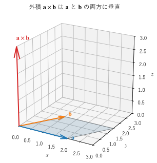

第 2 章 ベクトルの基礎
この章では、本書全体で使うベクトルの演算を復習する。成分表示、和とスカラー倍、ノルムから始め、内積、外積、スカラー三重積とベクトル三重積を扱う。どれも、後の章で勾配・発散・回転や線積分・面積分を理解するための道具になる。
ベクトルと成分表示
ベクトルは、大きさと向きを持つ量である。図では矢印で表し、矢印の長さが大きさ、矢印の向きがベクトルの向きを表す。始点の位置は問わないので、平行移動して重なる 2 本の矢印は同じベクトルを表す。これに対して、温度や質量のように大きさだけを持つ量をスカラーという。
3 次元の空間に直交座標系を取り、\(x, y, z\) 軸の正の向きを向いた長さ 1 のベクトルを \(\bm{e}_x, \bm{e}_y, \bm{e}_z\) とする。これらを基本単位ベクトルという。任意のベクトル \(\bm{a}\) は、これらの組み合わせで
と一通りに表せる。\(a_x, a_y, a_z\) を \(\bm{a}\) の成分といい、右辺の書き方を成分表示という。
原点 O を始点とし、点 P \((x, y, z)\) を終点とするベクトルを、点 P の位置ベクトルといい、本書では \(\bm{r} = (x, y, z)\) と書く。位置ベクトルを使うと、空間の点とベクトルを同じように扱える。
座標系は右手系に取る。右手系とは、右手の親指、人差し指、中指を互いに直角に開いたとき、それぞれが \(x, y, z\) 軸の正の向きになる座標系である。\(x\) 軸から \(y\) 軸へ右ねじを回すと、ねじが \(z\) 軸の正の向きに進む、と言ってもよい。右手系か左手系かは、後で説明する外積の向きに影響する。
和、スカラー倍、ノルム
ベクトルの和とスカラー倍は、成分ごとに計算する。
和 \(\bm{a} + \bm{b}\) は、\(\bm{a}\) の終点に \(\bm{b}\) の始点をつないだときの、\(\bm{a}\) の始点から \(\bm{b}\) の終点へ向かう矢印である。スカラー倍 \(k \bm{a}\) は、\(\bm{a}\) の長さを \(|k|\) 倍し、\(k < 0\) なら向きを反対にしたものである。
ベクトルの大きさ（長さ）をノルムといい、\(|\bm{a}|\) と書く。三平方の定理から
である。ノルムが 1 のベクトルを単位ベクトルという。0 でないベクトル \(\bm{a}\) を自分のノルムで割った \(\bm{a} / |\bm{a}|\) は、\(\bm{a}\) と同じ向きの単位ベクトルになる。この操作を正規化という。向きだけが必要な場面（法線の向き、進む方向など）で頻繁に使う。
内積
定義と成分による計算
2 つのベクトル \(\bm{a}, \bm{b}\) のなす角を \(\theta\)（\(0 \le \theta \le \pi\)）とするとき、
を \(\bm{a}\) と \(\bm{b}\) の内積（inner product、dot product）という。内積の値はスカラーである。成分で書くと
となる。2 つの式が等しいことは、余弦定理 \(|\bm{a} - \bm{b}|^2 = |\bm{a}|^2 + |\bm{b}|^2 - 2 |\bm{a}| |\bm{b}| \cos \theta\) の左辺を成分で展開すると確かめられる。
内積には次の性質がある。
\(\bm{a} \cdot \bm{b} = \bm{b} \cdot \bm{a}\)（交換法則）
\(\bm{a} \cdot (\bm{b} + \bm{c}) = \bm{a} \cdot \bm{b} + \bm{a} \cdot \bm{c}\)（分配法則）
\(\bm{a} \cdot \bm{a} = |\bm{a}|^2\)
0 でない \(\bm{a}, \bm{b}\) について、\(\bm{a} \cdot \bm{b} = 0\) と \(\bm{a} \perp \bm{b}\)（直交する）は同じことである。
内積の符号は、2 つのベクトルの向きの関係を表す。なす角が鋭角なら正、直角なら 0、鈍角なら負になる。基本単位ベクトルどうしの内積は \(\bm{e}_x \cdot \bm{e}_x = 1\)、\(\bm{e}_x \cdot \bm{e}_y = 0\) などであり、\(\bm{a} \cdot \bm{e}_x = a_x\) のように、内積で成分を取り出せる。
内積の式から、なす角は
で求められる。右辺の絶対値が 1 を超えないことは、コーシー・シュワルツの不等式 \(|\bm{a} \cdot \bm{b}| \le |\bm{a}| \, |\bm{b}|\) で保証される。等号は 2 つのベクトルが平行なときに成り立つ。
正射影
内積の最も重要な使い方は、あるベクトルの「ある方向の成分」を取り出すことである。単位ベクトル \(\bm{u}\) に対して、\(\bm{a} \cdot \bm{u} = |\bm{a}| \cos \theta\) は、\(\bm{a}\) と \(\bm{u}\) の始点をそろえ、\(\bm{a}\) の終点から \(\bm{u}\) の方向の直線に垂線を下ろしたときにできる影の長さ（符号付き）である。ここで \(\theta\) は \(\bm{a}\) と \(\bm{u}\) のなす角である。影をベクトルとして表した
を、\(\bm{a}\) の \(\bm{b}\) 方向への正射影という。\(\bm{a}\) から正射影を引いた残りは \(\bm{b}\) に直交する。つまり、任意のベクトルは「ある方向の成分」と「それに垂直な成分」に分けられる。
この考え方は本書の随所に現れる。たとえば、第 5 章の方向微分は勾配の正射影であり、第 12 章の流束は流れの速度の法線方向の成分を集めたものである。
力学の例として、物体が一定の力 \(\bm{F}\) を受けながら、まっすぐ \(\bm{d}\) だけ移動したとする。力がする仕事は、力の移動方向の成分と移動距離の積
である。移動方向に垂直な力（たとえば、円運動の向心力）は仕事をしない。第 11 章では、この式を曲がった経路に広げて線積分を定義する。
外積
定義
3 次元のベクトル \(\bm{a}, \bm{b}\) に対して、次の性質を持つベクトルを \(\bm{a}\) と \(\bm{b}\) の外積（cross product、ベクトル積）といい、\(\bm{a} \times \bm{b}\) と書く。
向き：\(\bm{a}\) と \(\bm{b}\) の両方に垂直で、\(\bm{a}\) から \(\bm{b}\) へ右ねじを回したときにねじが進む向き
大きさ：\(|\bm{a} \times \bm{b}| = |\bm{a}| \, |\bm{b}| \sin \theta\)（\(\bm{a}\) と \(\bm{b}\) が作る平行四辺形の面積）
内積がスカラーを返すのに対し、外積はベクトルを返す。図 2 は、\(xy\) 平面上の 2 つのベクトルの外積が \(z\) 軸の正の向きを向く様子を示したものである。


図 2 外積の向きと、平行四辺形の面積
13def create_figure() -> Figure:
14 """a、b、a×b と、a と b が作る平行四辺形を描く."""
15 a = np.array([2.0, 0.0, 0.0])
16 b = np.array([1.0, 1.5, 0.0])
17 axb = np.cross(a, b) # (0, 0, 3)
18
19 fig = plt.figure(figsize=(6.0, 5.0))
20 ax = vc_plot.add_axes3d(fig)
21
22 # a と b が作る平行四辺形（面積は |a×b|）
23 corners = np.array([np.zeros(3), a, a + b, b, np.zeros(3)])
24 ax.plot(corners[:, 0], corners[:, 1], corners[:, 2], color="0.5", linewidth=1)
25 ax.plot_trisurf([0.0, a[0], a[0] + b[0], b[0]], [0.0, a[1], a[1] + b[1], b[1]],
26 [0.0, 0.0, 0.0, 0.0], color="C0", alpha=0.15)
27
28 vc_plot.draw_vector3d(ax, a, color="C0", label=r"$\mathbf{a}$")
29 vc_plot.draw_vector3d(ax, b, color="C1", label=r"$\mathbf{b}$")
30 vc_plot.draw_vector3d(ax, axb, color="C3", label=r"$\mathbf{a}\times\mathbf{b}$")
31
32 ax.set_xlim(0, 3)
33 ax.set_ylim(0, 3)
34 ax.set_zlim(0, 3)
35 ax.set_box_aspect((1, 1, 1))
36 ax.view_init(elev=22, azim=-60)
37 ax.set_title(r"外積 $\mathbf{a}\times\mathbf{b}$ は $\mathbf{a}$ と $\mathbf{b}$ の両方に垂直")
38 return fig
サンプルの全体：ch02_cross_product.py
成分による計算
外積を成分で書くと次のようになる。
覚えにくい式だが、形式的な行列式
を 1 行目について展開すると得られる。また、\(x\) 成分は添字 \(y, z\) から、\(y\) 成分は \(z, x\) から、\(z\) 成分は \(x, y\) から作られている（\(x \to y \to z \to x\) と循環させる）ことに注目すると覚えやすい。この覚え方は第 7 章の回転の成分表示でも役に立つ。
基本単位ベクトルどうしの外積は
であり、同じベクトルどうしの外積は \(\bm{0}\) である。
外積の性質
外積には次の性質がある。
\(\bm{b} \times \bm{a} = -\bm{a} \times \bm{b}\)（順序を入れ替えると符号が変わる。交換法則は成り立たない）
\(\bm{a} \times \bm{a} = \bm{0}\)。より一般に、平行な 2 つのベクトルの外積は \(\bm{0}\) である。
\(\bm{a} \times (\bm{b} + \bm{c}) = \bm{a} \times \bm{b} + \bm{a} \times \bm{c}\)（分配法則）
\((\bm{a} \times \bm{b}) \cdot \bm{a} = (\bm{a} \times \bm{b}) \cdot \bm{b} = 0\)（外積は元の 2 つのベクトルに垂直）
結合法則は成り立たない。一般に \(\bm{a} \times (\bm{b} \times \bm{c}) \ne (\bm{a} \times \bm{b}) \times \bm{c}\) である。
外積の工学での使い方
外積は、「2 つの方向に垂直な方向」と「平行四辺形の面積」を同時に与える。代表的な使い方を挙げる。
法線ベクトル：平面上の 2 つの方向 \(\bm{a}, \bm{b}\) の外積は、その平面に垂直である。CG では、三角形ポリゴンの 2 辺の外積で面の法線を求める。第 12 章では、曲面の法線と面積を同じ方法で求める。
トルク（力のモーメント）：原点から見た位置 \(\bm{r}\) の点に力 \(\bm{F}\) を加えたときの、原点のまわりのトルクは \(\bm{\tau} = \bm{r} \times \bm{F}\) である。向きが回転軸、大きさが回そうとする強さを表す。
回転する物体の速度：角速度ベクトル \(\bm{\Omega}\)（向きが回転軸、大きさが角速度）で回転する剛体の、位置 \(\bm{r}\) の点の速度は \(\bm{v} = \bm{\Omega} \times \bm{r}\) である。この式は第 7 章で回転の意味を調べるときに使う。
ローレンツ力：磁束密度 \(\bm{B}\) の中を速度 \(\bm{v}\) で動く電荷 \(q\) が受ける力は \(q \bm{v} \times \bm{B}\) である。モーターの原理である。
外積は 3 次元に特有の演算である。2 次元のベクトル \((a_x, a_y)\)、\((b_x, b_y)\) については、\(z\) 成分を 0 とした 3 次元のベクトルとみなすと、外積の \(z\) 成分 \(a_x b_y - a_y b_x\) だけが残る。この値は、2 つのベクトルが作る平行四辺形の符号付き面積であり、\(\bm{a}\) から \(\bm{b}\) へ反時計回りなら正になる。第 13 章の面積公式で使う。
三重積
スカラー三重積
3 つのベクトルについて、\(\bm{a} \cdot (\bm{b} \times \bm{c})\) をスカラー三重積という。\(\bm{b} \times \bm{c}\) の大きさは \(\bm{b}\) と \(\bm{c}\) が作る平行四辺形の面積で、向きはその面に垂直である。そこに \(\bm{a}\) との内積を取ると、\(\bm{a}\) の面に垂直な成分（高さ）が掛かる。したがって、スカラー三重積の絶対値は、3 つのベクトルが作る平行六面体の体積である。符号は、\(\bm{a}, \bm{b}, \bm{c}\) がこの順に右手系をなすときに正になる。
成分で書くと、スカラー三重積は 3 つのベクトルを並べた行列式に等しい。
行列式の性質から、3 つのベクトルを巡回的に入れ替えても値は変わらない。
スカラー三重積が 0 になるのは、3 つのベクトルが同じ平面に乗っている（平行六面体がつぶれている）ときである。第 10 章では、変数変換で体積がどう変わるかを、この「行列式は体積」という見方で説明する。
ベクトル三重積
\(\bm{a} \times (\bm{b} \times \bm{c})\) をベクトル三重積という。次の公式が成り立つ。
右辺の並びから「バック・キャブ（BAC − CAB）の公式」と呼ばれることがある。\(\bm{b} \times \bm{c}\) は \(\bm{b}\) と \(\bm{c}\) が張る平面に垂直なので、それとさらに外積を取った左辺は、\(\bm{b}\) と \(\bm{c}\) が張る平面の中にある。右辺が \(\bm{b}\) と \(\bm{c}\) の組み合わせになっているのはそのためである。この公式は、第 8 章で回転の回転 \(\nabla \times (\nabla \times \bm{F})\) の公式を導くときの手がかりになる。成分による証明は付録 B で示す。
NumPy による計算
これまでの演算を NumPy で計算してみる。NumPy では、ベクトルを 1 次元の配列で表す。内積は @ 演算子（または np.dot）、外積は np.cross、ノルムは np.linalg.norm で計算できる。
23def report() -> None:
24 """内積、なす角、正射影、外積、三重積を計算して表示する."""
25 a = np.array([1.0, 2.0, 2.0])
26 b = np.array([3.0, 0.0, 4.0])
27 c = np.array([0.0, 1.0, 1.0])
28 print(f"a = {a}, b = {b}, c = {c}")
29 print(f"|a| = {np.linalg.norm(a):.6f}, |b| = {np.linalg.norm(b):.6f}")
30 print(f"a・b = {a @ b:.6f}")
31 print(f"a と b のなす角 = {angle_deg(a, b):.6f} 度")
32 print(f"a の b 方向への正射影 = {projection(a, b)}")
33
34 axb = np.cross(a, b)
35 print(f"a×b = {axb}")
36 print(f"(a×b)・a = {axb @ a:.6f}, (a×b)・b = {axb @ b:.6f}")
37 print(f"|a×b| = {np.linalg.norm(axb):.6f}（a と b が作る平行四辺形の面積）")
38 print(f"b×a = {np.cross(b, a)}")
39
40 triple = a @ np.cross(b, c)
41 det = np.linalg.det(np.array([a, b, c]))
42 print(f"a・(b×c) = {triple:.6f}, det[a; b; c] = {det:.6f}")
43 left = np.cross(a, np.cross(b, c))
44 right = (a @ c) * b - (a @ b) * c
45 print(f"a×(b×c) = {left}, (a・c)b - (a・b)c = {right}")
サンプルの全体：ch02_vector_ops.py
a = [1. 2. 2.], b = [3. 0. 4.], c = [0. 1. 1.]
|a| = 3.000000, |b| = 5.000000
a・b = 11.000000
a と b のなす角 = 42.833428 度
a の b 方向への正射影 = [1.32 0. 1.76]
a×b = [ 8. 2. -6.]
(a×b)・a = 0.000000, (a×b)・b = 0.000000
|a×b| = 10.198039（a と b が作る平行四辺形の面積）
b×a = [-8. -2. 6.]
a・(b×c) = -4.000000, det[a; b; c] = -4.000000
a×(b×c) = [ 12. -11. 5.], (a・c)b - (a・b)c = [ 12. -11. 5.]
\(\bm{a} = (1, 2, 2)\)、\(\bm{b} = (3, 0, 4)\) の内積は \(3 + 0 + 8 = 11\) であり、\(|\bm{a}| = 3\)、\(|\bm{b}| = 5\) なので \(\cos \theta = 11/15\)、なす角は約 42.8 度である。外積 \(\bm{a} \times \bm{b} = (8, 2, -6)\) は、\(\bm{a}\) とも \(\bm{b}\) とも内積が 0 であり、両方に垂直であることが確かめられる。順序を入れ替えた \(\bm{b} \times \bm{a}\) は符号が反転している。\(\bm{c} = (0, 1, 1)\) を加えたスカラー三重積は行列式と一致し、ベクトル三重積は (1) の右辺と一致している。
この章のまとめ
ベクトルは大きさと向きを持つ量であり、基本単位ベクトル \(\bm{e}_x, \bm{e}_y, \bm{e}_z\) を使って成分表示できる。座標系は右手系に取る。
内積 \(\bm{a} \cdot \bm{b} = |\bm{a}| |\bm{b}| \cos \theta\) はスカラーであり、なす角、直交の判定、ある方向の成分（正射影）、仕事の計算に使う。
外積 \(\bm{a} \times \bm{b}\) は 2 つのベクトルに垂直なベクトルで、大きさは平行四辺形の面積である。法線、トルク、回転の速度に使う。順序を入れ替えると符号が変わる。
スカラー三重積は平行六面体の符号付き体積で、行列式に等しい。
ベクトル三重積には \(\bm{a} \times (\bm{b} \times \bm{c}) = (\bm{a} \cdot \bm{c}) \bm{b} - (\bm{a} \cdot \bm{b}) \bm{c}\) が成り立つ。